Поэт прожил здесь большую часть жизни. По признанию самого поэта, в Михайловском изменился его творческий метод. От романтизма первых лет молодости он перешел к «романтизму истинному» (реализм).
В Михайловском создано около 100 произведений поэта: деревенские главы романа «Евгений Онегин», трагедия «Борис Годунов», поэма «Граф Нулин», окончание поэмы «Цыганы», такие стихотворения, как «Деревня», «Пророк», «Я помню чудное мгновенье...», «Вновь я посетил ...» и др.
12 января 1742 года большая часть земель именным указом императрицы Елизаветы Петровны были пожалованы в вечное владение прадеду А. С. Пушкина А. С. Пушкина Абраму Петровичу Ганнибалу.
После смерти Абрама Петровича в 1781 году сельцо Михайловское досталось по раздельному акту между его сыновьями Осипу Абрамовичу, который построил в нем господский дом и усадьбу, разбил парк с куртинами, аллеями и цветниками.
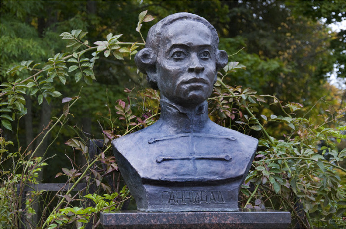
Косовой Е. А., Бюст Абрама Ганнибала
После смерти А. С. Пушкина опека выкупает имение у наследников. Более двадцати лет дом стоял без хозяина, постепенно разрушаясь. В связи со
100-летием со дня рождения А. С. Пушкина имение было выкуплено
и поступило в государственную собственность.
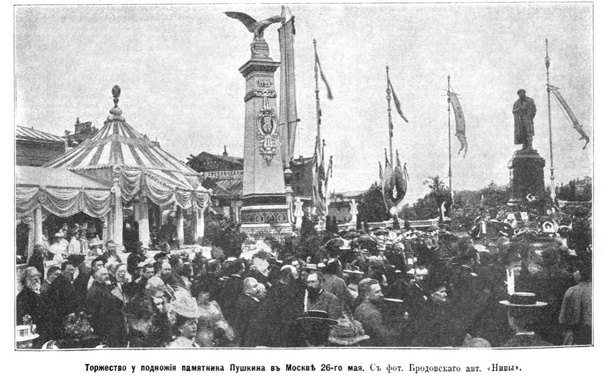
Фото из журнала "Нива" №25 от 19 июня 1899 года.
В феврале 1918 г. Михайловское было сожжено. Из усадебных построек уцелел только «Домик няни», разрушенный позже в годы немецкой оккупации. В 1937 г. к 100-летней годовщине со дня гибели Пушкина дом был вновь восстановлен.
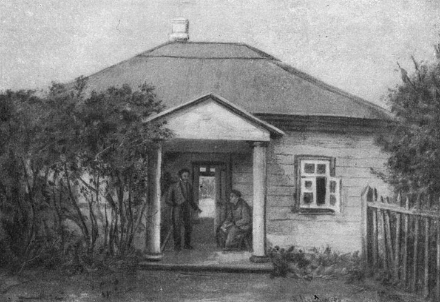
Михайловское. Домик няни. Этюд В. Максимова. 1898 г.
В 1941 г. - 1944 г. музей-заповедник был оккупирован немецкими войсками. В 1944 г. Дом-музей А. С. Пушкина был уничтожен. Вновь дом поэта восстановлен на старом фундаменте к 1949 году.
Сегодня посетители комплекса могут осмотреть дом-музей А. С. Пушкина, усадебные постройки (Домик няни, Кухню, Дом и контору управляющего, Колонию литераторов), а также Михайловский парк.
Дом-музей поэта является центром экспозиции, с него начинается знакомство с заповедником. Сперва гости попадают в переднюю, где представлены экспонаты, рассказывающие об истории усадьбы.
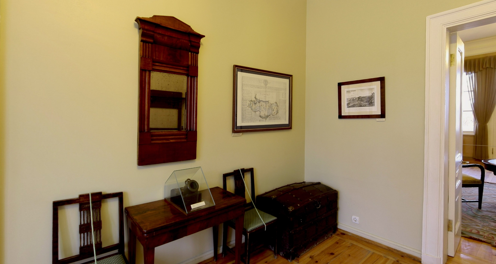
Слева от передней находится девичья (комната няни). Здесь под руководством няни Пушкина Арины Родионовны занимались рукоделием дворовые девушки. Особенно ценными экспонатами являются вышивки, сделанные дворовыми девушками Михайловского и Тригорского.
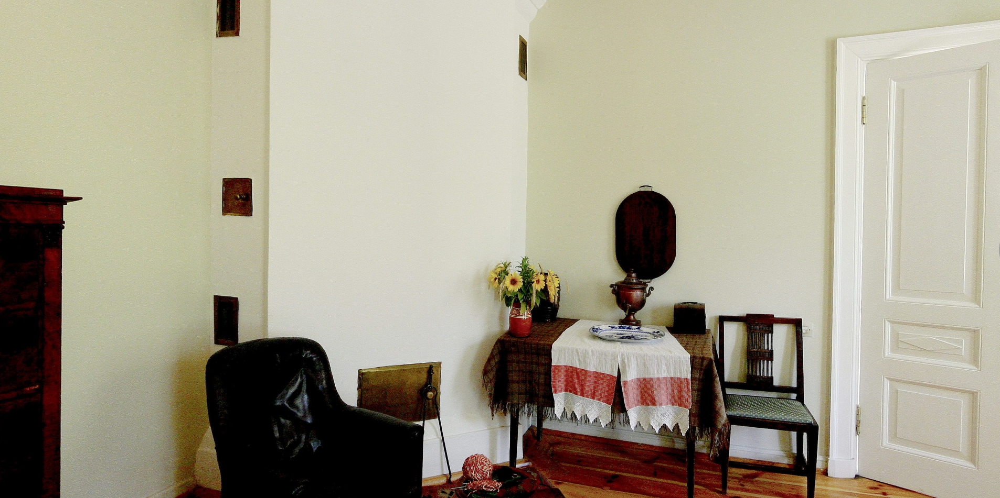
Из комнаты няни гости попадают в родительскую комнату. Кроме семейных портретов, экспозиция содержит копии автографов писем и черновиков произведений поэта передают настроение его отчаяния в начальный период ссылки, переход к «воскресению» через творчество. Экспозиция посвящена первым месяцам михайловской ссылки А. С. Пушкина.
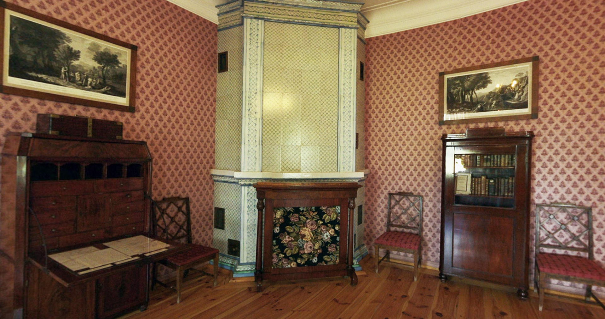
Гостиная, иначе зальце, примыкает к комнате родителей. В гостиной восстановлена обстановка того времени. На стенах висят бра, между которыми расположены портреты предков и родственников поэта. В углу имеется изразцовый камин.
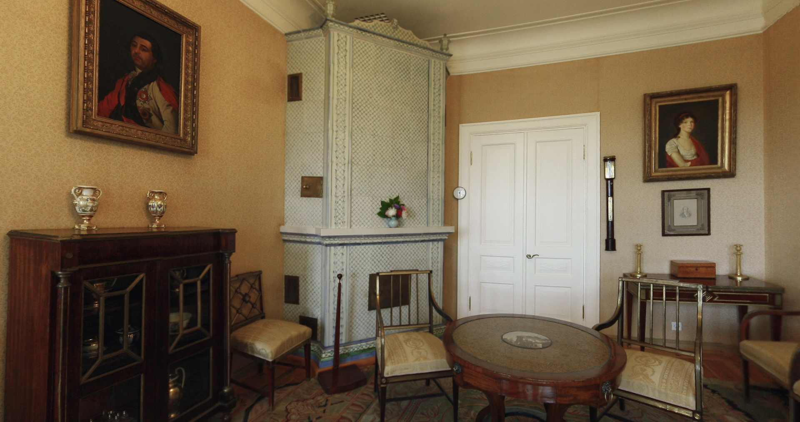
Также в гостиной - «портреты дедов на стенах». Представлены портреты: двоюродного деда Пушкина - Ивана Абрамовича Ганнибала — русского военачальника, главнокомандующего Черноморским флотом и прадеда поэта - Абрама Петровича Ганнибала - сына арапа Петра Великого. Из окон зальца открывается вид на ландшафт, воспетый поэтом в романе «Евгений Онегин», стихотворении «Деревня».
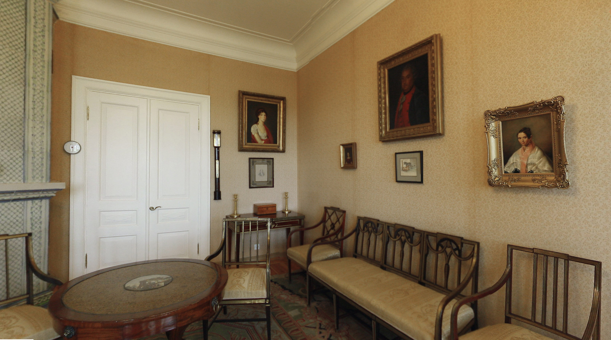
Далее гости проходят в столовую. В ссылке в 1835 году Пушкина навещали друзья-лицеисты - Пущин, Горчаков, Дельвиг, Кюхельбекер. Их портреты украшают стены столовой. В столовой представлен портрет А. С. Пушкина (кисти Кипренского), заказанный А. Дельвигом и скопированный в 1860-е годы для Пушкинского музея Александровского Лицея. Наибольший интерес представляют мемориальные вещи: предметы посуды из семьи Пушкиных
и Ланских (блюдо, подставки, бокалы), пресс-папье из сосны, воспетой поэтом
в стихотворении «Вновь я посетил ...».
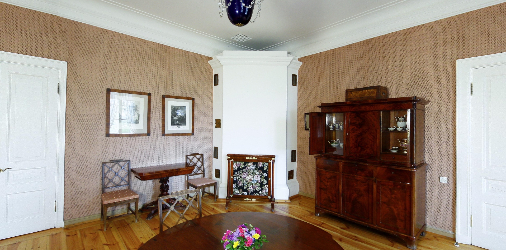
Здесь вы видите кабинет великого поэта.
В комнате собраны мемориальные вещи — письменный стол, кресло, чернильница, подставка для перьев и другие предметы мебели и интерьера. Эта комната, воспроизведенная художником Ге в картине «Пушкин и Пущин в селе Михайловском».
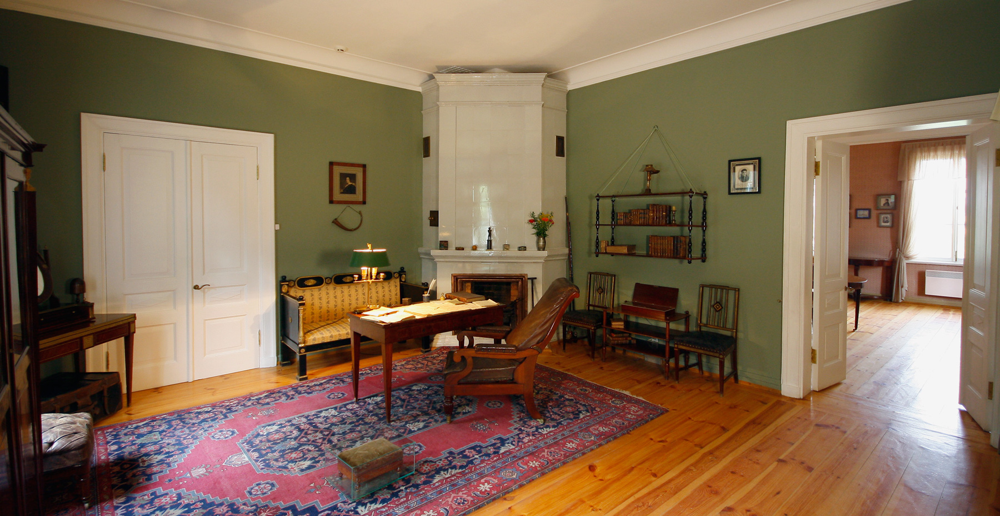
На территории усадьбы есть еще несколько восстановленных флигелей. Это «Дом управляющего», «Контора управляющего» и «Колония литераторов». Первые два дома занимают служебные помещения, а «Колония литераторов» используется как выставочный павильон.
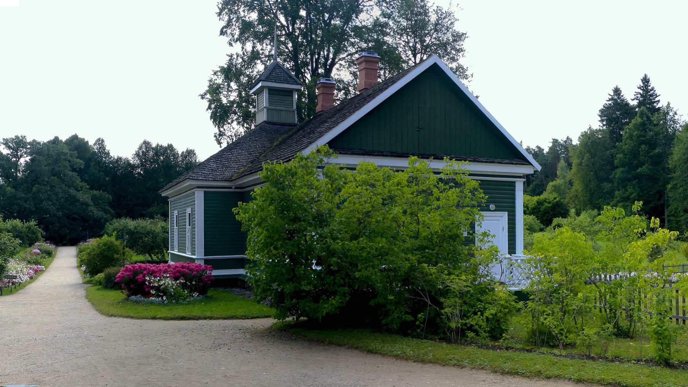
Недалеко от господского дома стоит небольшой «Домик няни». Восстановлен в 1947 году. В соответствии с «Описью сельца Михайловского» 1838 г.: «Деревянного строения, крыт и обшит тесом, в нем комнат - 1... Под одной связью баня с голландскою печью, и в ней посредственной величины котел». Внутри дом поделен коридором на две половины. Справа дверь в комнату баньку, слева - в светелку Арины Родионовны.
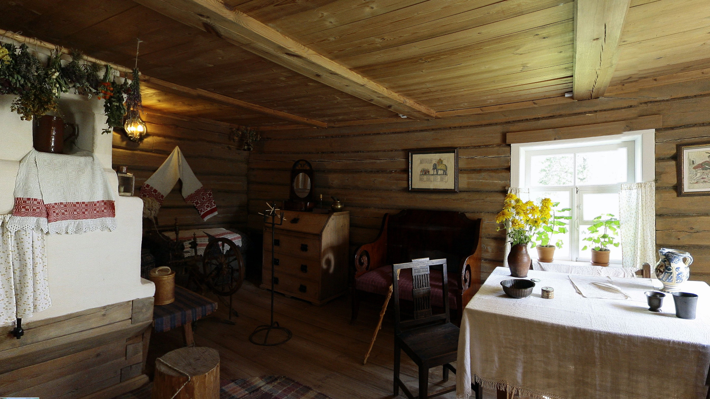
Флигель восстановлен в 1951 г., в соответствии с «Описью»: «В нем 2 комнаты с двумя русскими печами.»
В первой комнате располагалась господская кухня, в которой готовились блюда длябарского стола. Во второй половине флигеля, вероятно, жила кухарка Пушкиных и ее семья.
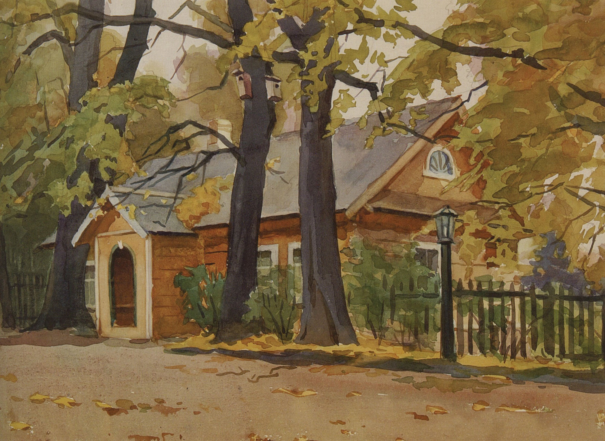
Сергей Фролов «Михайловское. Флигель». 1963 г.
Справа от входа в музей расположена кухня – людская. В кухне находятся предметы усадебного быта, а также кухонная утварь XVIII - нач. XIX в.: рыбница для заливной рыбы, тазы, в которых варилось варенье, ковши, деревянная лопата для хлебов.
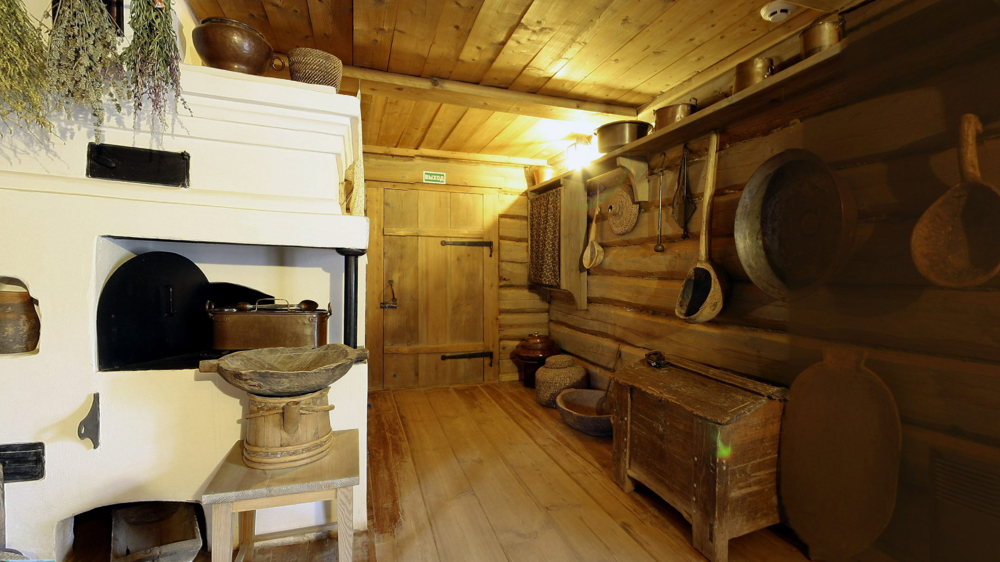